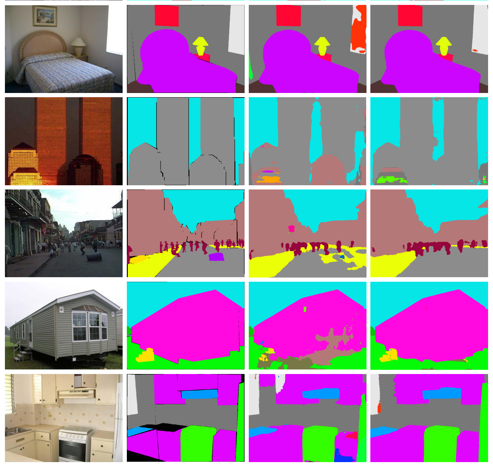
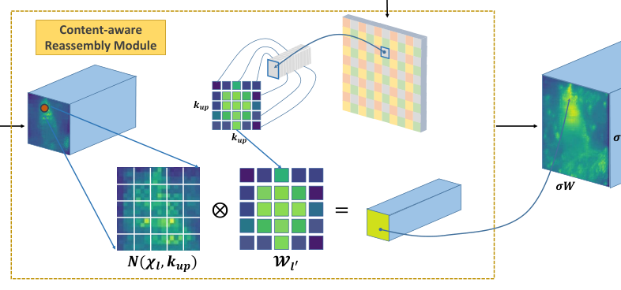
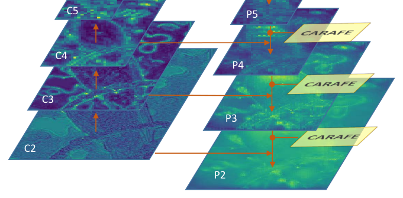
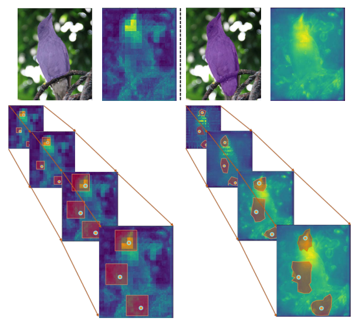
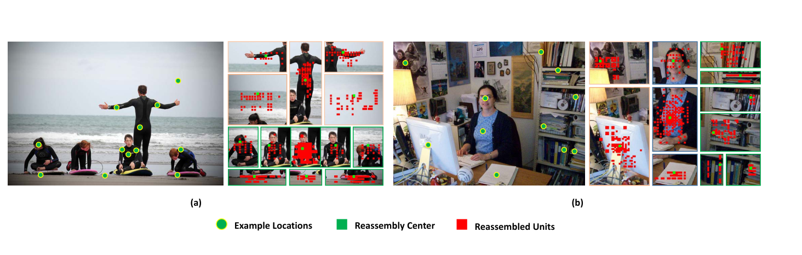
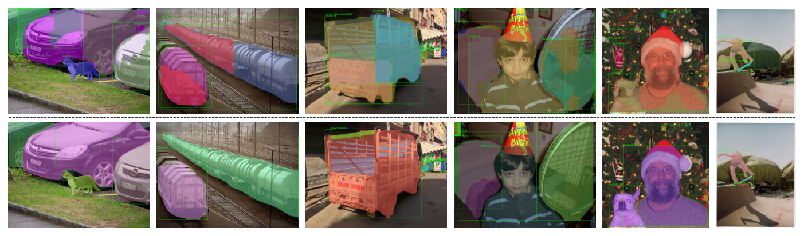
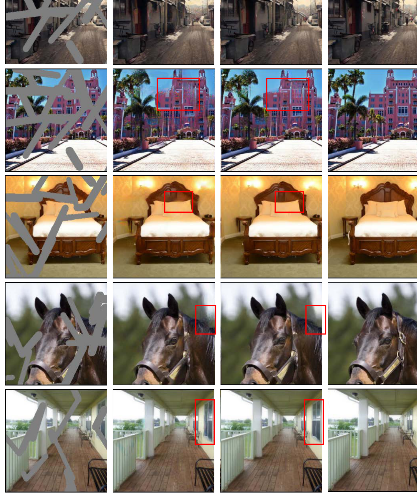

ADE20k 语义分割：UperNet 基线 vs UperNet w/ CARAFE。物体边界与细小结构更完整。
把上采样拆解为「逐位置预测重组核」与「按核重组局部特征」两步，在 FPN 中为 Faster R-CNN 带来 +1.2% AP，256 通道 2 倍上采样仅需 199k FLOPs 每像素。
用轻量全卷积模块在线预测每个目标位置专属的 k×k 重组核；这些空间自适应权重不是网络参数，而是由内容即时生成。
每位置核参数仅 K×K，256 通道 2 倍上采样只需 199k FLOPs，约为反卷积 1180k 的六分之一。
可无缝替换 FPN、mask head、UperNet 三组件、修复 U-Net 中的既有上采样器，无需改动其余结构。
四类密集预测任务一致增益：COCO 检测 +1.2% AP、实例分割 +1.3% AP、ADE20k 语义分割 +1.8% mIoU、Places 图像修复 +1.1 dB PSNR，而计算开销可忽略。
特征上采样是密集预测任务的基础操作：既要把高层低分辨率特征放大到监督分辨率，也要与低层高分辨率特征融合。FPN 的自顶向下路径、U-Net 的跳跃连接、Stacked Hourglass 的逐级恢复都依赖它，其设计质量直接决定任务上限。
最近邻与双线性插值只按像素间空间距离取值，仅利用亚像素邻域内的信息，无法捕获密集预测所需的丰富语义。
同一组核对整幅图所有样本共享、与内容无关；核尺寸增大时参数量与计算量急剧上升，难以覆盖小邻域之外的区域。
Pixel Shuffle 走通道重排、局限于小邻域上下文；GUM 用可学习偏移做引导插值，需昂贵计算才能完成自适应。
缺口收窄为：暂未有上采样算子能同时满足 ① 大感受野聚合上下文 ② 按实例内容在线自适应 ③ 足够轻量可即插即用 这三个要求。
给定大小为 C × H × W 的特征图 X 与整数上采样倍率 σ，CARAFE 产出 C × σH × σW 的新特征图 X'。对任意目标位置 l' = (i', j')，其对应源位置为 l = (i, j)，其中 i = ⌊i'/σ⌋、j = ⌊j'/σ⌋；记 N(Xl, k) 为以 l 中心的 k × k 子区域。
Wl' = ψ( N(Xl, kencoder) )
其中 ψ 是核预测模块，kencoder 是内容编码器的核尺寸，Wl' 是位置 l' 专属的重组核。
X'l' = φ( N(Xl, kup), Wl' )
其中 φ 是内容感知重组模块，kup 是重组核尺寸 —— 以预测核为权重对局部邻域加权求和。

用一个 1×1 卷积把输入通道从 C 压到 Cm，目标是压低后续核预测的参数与计算量。
通道变少后，内容编码器在相同预算下还能使用更大的核尺寸；实验显示在可接受范围内压缩通道不会损害性能。
用核尺寸为 kencoder 的卷积层依据输入内容生成重组核，参数量为
kencoder × kencoder × Cm × Cup
增大 kencoder 能扩大感受野、利用更大区域上下文预测核，但复杂度随核尺寸平方增长而收益并不成比例。
原文消融总结出经验公式 kencoder = kup − 2，是性能与效率之间的良好折中。
X'l' = Σn=-rr Σm=-rr Wl'(n, m) · X(i+n, j+m)
Wl'(n,m) 是重组核在偏移 (n,m) 处的权重，X(i+n,j+m) 是邻域内的源特征；重组结果按空间块重排后即得上采样输出。
同为内容感知，但它是「预测滤波层 + 滤波层」两步卷积、计算沉重；每位置核参数 C×C×K×K，CARAFE 只做局部重组、不学跨通道变换，核参数仅 K×K。
后者预测同尺寸注意力图逐点缩放特征；CARAFE 是区域指导的重组。空间注意力可视为重组核尺寸为 1 时（忽略核归一化）的特例。
后者预测全局参数化变换并 warp 特征，假设过强且难训练；CARAFE 用逐位置重组建模更灵活的局部几何。
后者预测核偏移并与常规卷积结合，是重参数算子，计算量约为 CARAFE 的 24 倍，且对参数初始化敏感。
2(Cin+1)Cm + 2(Cmkencoder²+1)σ²kup² + 2σ²kup²Cin
三项分别对应通道压缩、核预测与重组操作。
256 通道、H×W 特征图做 2 倍上采样：CARAFE 仅引入 H×W×199k FLOPs，反卷积为 H×W×1180k —— 约为其六分之一，因此可作为通用构建块直接嵌入现代网络。

CARAFE 不仅在空间上上采样特征图，还同时增强了它的判别性。

把 {1×1, 2×2, 3×3, 6×6} 的池化特征恢复原尺寸，因上采样倍率过大，采用两步策略：先双线性插值到原图一半尺寸，再用 CARAFE 上采样 2 倍。
FPN 的替换方式与检测相同；FUSE 把 P3、P4、P5 上采样到 P2 尺寸后拼接，等价于逐级上采样-拼接的串行过程，本文用 CARAFE 替换其中的串行双线性上采样。
Global&Local 与 Partial Conv 的 U-Net 后半有两个上采样层，直接替换即可；对 Partial Conv 还可用内容感知重组核同步更新掩码，方便地保留掩码传播机制。
结论：CARAFE 可以无缝替换任何需要上采样器的位置，覆盖检测、实例分割、语义分割与低层修复四类架构。
检测/实例分割：MS COCO 2017 训练，主结果为 test-dev 2018，IoU 0.5:0.95 mAP 系列。语义分割：ADE20k，mIoU 与像素精度 P.A.。修复：Places，L1 误差与 PSNR。
ResNet-50 + FPN 的 Faster/Mask R-CNN，短边 800、长边 ≤1333；同步 SGD，lr 0.02、momentum 0.9、wd 1e-4；8 卡 batch 16，12 epochs，第 8/11 轮 lr ×0.1。
UperNet + ResNet-50，训练短边随机取 {300,375,450,525,600}、长边 ≤1200，测试短边 450，poly power 0.9，20 epochs，同步 BN。Cm=64、kencoder=3、kup=5。
Nearest 36.5 · Bilinear 36.7 · Nearest+Conv 36.6 · Bilinear+Conv 36.6 · Deconv 36.4 · Pixel Shuffle 36.5 · GUM 36.9 · Spatial Attention 36.9
CARAFE 37.8 （FLOPs 仅 199k、参数仅 74k）
Bilinear 34.2 · Deconv 34.2 · Pixel Shuffle 34.4 · GUM 34.3 · Spatial Attention 34.1
CARAFE 34.7 mask AP 居首
修复是纯低层任务，与检测/分割的语义诉求不同 —— CARAFE 在此依然带来提升，说明「按内容重组局部信息」这一机制本身具有跨任务通用性，而非只在高层语义任务上凑效。




两张定性对比分别与 mIoU 40.44 → 42.23、PSNR 19.58 → 20.71 dB 的定量提升互相印证。
把上采样归约为「逐位置核预测 + 局部加权重组」，每位置核参数仅 K×K、199k FLOPs 远低于反卷积的 1180k，为轻量动态算子设计提供了通用模板。
softmax 归一化使核和为 1 从而不改变特征均值；重组可视化显示语义相似点被优先聚合 —— 机制解释与检测、分割、修复四类任务的增益互相印证，说服力强。
可无缝替换 FPN、mask head、UperNet 三组件与修复 U-Net 中的既有上采样器，无需改动其余结构，并已在 MMDetection 中开源，便于直接嵌入现有流水线。